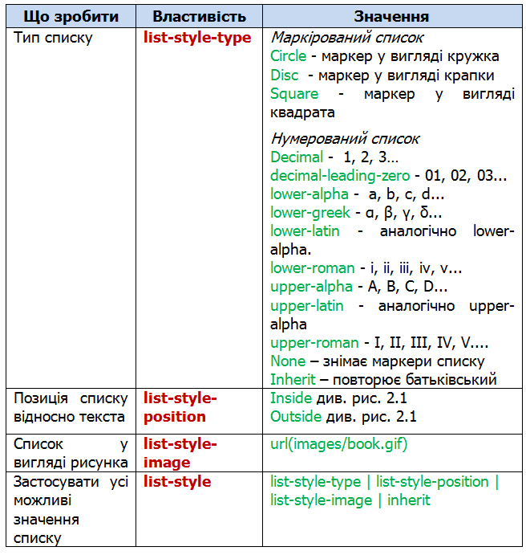
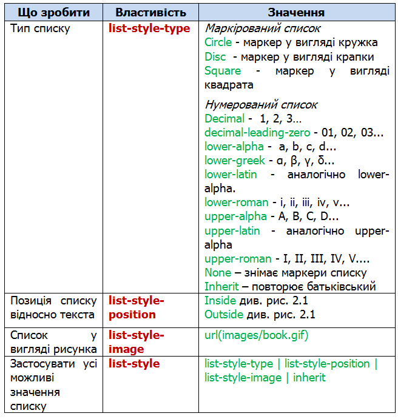
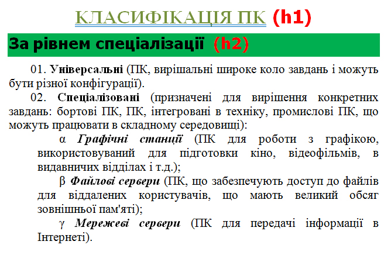

2 Стилі для списків
Таблиця 2.1 – Властивості списків

 Приклад 2.1.
Приклад 2.1.
Рис. 2.1 – Позиція списку відносно тексту
Таблиця 2.1 – Властивості списків

Приклад 2.1.
Рис. 2.1 – Позиція списку відносно тексту
 |
Завдання 2.1. За допомогою внутрішньої таблиці стилів із форматуванням селекторів h1, h2, ul та ol оформити текст: |
